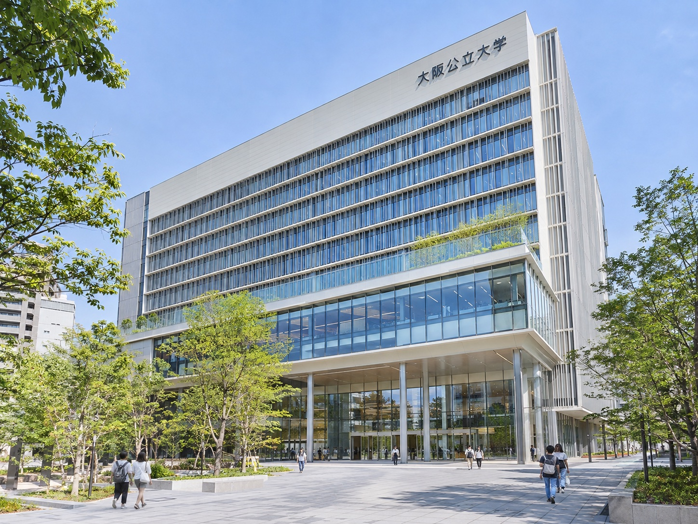

大学進学を控えた高校3年生と保護者の皆さん。
日本学生支援機構（JASSO）の奨学金で「採用候補者」に決まったら、ひとまず安心するかもしれません。
しかし、奨学金の予約採用が決まっても、すぐにお金が振り込まれるわけではありません。
進学後には「進学届」の提出が必要です。また、入学金などを支払う時点では、まだ奨学金を受け取れていないこともあります。
予約採用が決まった人は、まず次の3点を確認してください。
- 進学後に必要な手続きと提出期限
- 奨学金の初回振込時期
- 入学前に必要な費用と、その支払期限
今回は、予約採用決定後の手続きと、進学費用を準備するうえで大切なことをお話しします。
奨学金の予約採用が決まったら、何をすればいい？
JASSOの予約採用で採用候補者に決まった人は、進学後にも手続きが必要です。
特に重要なのが「進学届」の提出です。
基本的な流れを確認しておきましょう。
- 採用候補者決定通知を確認する
採用候補となった奨学金の種類や条件を確認し、必要書類を保管します。
- 進学先に必要書類を提出する
進学先の学校が指定する期限までに、採用候補者決定通知などを提出します。
- インターネットで進学届を提出する
進学先から案内される識別番号などを使い、指定された期限内に入力します。
- 初回振込を確認する
進学届の提出時期などによって振込日が変わるため、進学先とJASSOの案内を確認します。
採用候補者になっただけで、すべての手続きが終わるわけではありません。
必要書類や期限は、採用された奨学金の種類によっても異なります。必ず自分の通知と進学先の案内を確認してください。
奨学金はいつ振り込まれる？ 入学金に間に合う？
JASSOによると、予約採用者の初回振込は、進学届の手続き時期に応じて4月から6月のいずれかになります。
つまり、入学前に支払う入学金や、入学直後に必要な費用には、奨学金の振込が間に合わない可能性があります。
例えば、入学金の支払期限が2月で、奨学金の初回振込が4月なら、その間のお金を別に準備しなければなりません。
「奨学金があるから大丈夫」と思っていたのに、必要な時期にお金が足りない。
そんなことにならないよう、いくら受け取れるかだけでなく、いつ受け取れるかを必ず確認してください。
入学前に必要なお金を計算しておこう

大学進学に必要なのは、授業料だけではありません。
入学金、教材費、パソコン代、通学費などに加え、一人暮らしをするなら家賃や引っ越し費用も必要です。
まずは進学予定の大学の公式案内を確認し、必要な費用を書き出してみてください。
その際は、金額だけでなく、支払期限も一緒に整理することをおすすめします。
僕の経験上、進学には事前に想定していた以上のお金がかかることもあります。
そのため、必要額をぎりぎり用意するのではなく、予備費も設定しておいてほしいと思います。
特に、入学前後はまとまった支出が重なりやすい時期です。
「いつまでに、いくら必要なのか」を把握することが、お金の準備の第一歩です。
貸与型奨学金は、できるだけ最後の手段に
奨学金には、大きく分けて給付型と貸与型があります。
給付型は、原則として返還する必要のない奨学金です。一方、貸与型は、卒業後などに返還しなければなりません。
僕は、貸与型奨学金の利用は、できるだけ最後の手段にしてほしいと考えています。
なぜなら、貸与型奨学金を借りるということは、将来の子どもに返済の負担を背負わせることだからです。
例えば、月5万円を4年間借りると、貸与総額は240万円になります。
利息の有無や返還条件によって実際の返還総額は異なりますが、決して小さな負担ではありません。
もちろん、貸与型奨学金によって、希望する進路を実現できる場合もあります。
僕は借りること自体を否定しているわけではありません。
ただ、利用する前にほかの選択肢を十分に調べ、必要な金額を慎重に考えてほしいのです。
まずは給付型奨学金や授業料等の減免制度など、返還不要の支援から確認することをおすすめします。
奨学金が足りないときは、ほかの支援制度も調べよう
JASSOの奨学金だけで、すべての進学費用をまかなえるとは限りません。
そんなときは、大学独自の奨学金や授業料減免制度、自治体や民間財団の支援制度も調べてみてください。
ただし、制度によっては併用できなかったり、申請期限が早かったりする場合もあります。
対象者、支援金額、併用条件、申請期限を必ず確認しましょう。
また、入学前の資金が不足する場合は、大学に入学金や授業料の納付期限延長、分納制度がないか問い合わせてみることも大切です。
すべての大学で利用できるわけではありませんが、相談する前から諦める必要はありません。
お金を理由に、最初から進学を諦めてほしくない
僕が進学費用について相談されたら、まず考えるのは、どうすれば本人の希望する学校へ進学できるかということです。
お金が足りないからといって、最初から進学を諦めてほしくありません。
もちろん、どんな費用をかけてでも進学すべきだという意味ではありません。入学後の生活や卒業後の負担も含め、現実的に考える必要があります。
ただ、その判断をする前に、利用できる制度をできる限り調べてほしいのです。
僕自身、相談を受けたら一緒に支援制度を探します。
協力してくれる学校の先生も、たくさんいるのではないでしょうか。
一人で抱え込まず、学校や進学先にも相談してみてください。
まとめ｜進学を諦める前に、できることを探そう
奨学金の予約採用が決まった人は、進学届の手続きと初回振込の時期を必ず確認してください。
そのうえで、入学前後に必要な費用と支払期限を整理し、計画的に準備を進めましょう。
貸与型奨学金を利用する場合は、卒業後の返還まで考え、借りる金額を慎重に決めてほしいと思います。
そして何より、僕が伝えたいのは、お金が足りないという理由だけで希望する進路を簡単に諦めてほしくないということです。
大切なのは、進学を諦めるかどうか考える前に、実現するための方法を探すことです。
利用できる制度を調べ、必要な人に相談しながら、進学への道を考えていきましょう。